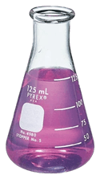

Escaped Lab Babies (Trope)
The Escaped Lab Baby is a combination of two tropes, Raised in a Lab and Escaped from the Lab, which combined make for some of my favorite types of fictional characters. The character was either born in the lab or has lived there since childhood, and is the only environment they know until they inevitably escape.
There is most definitely something different or important about them; why else would they be in a lab? Maybe it's discreet, maybe it's all too obvious, and they struggle to hide it, if even possible. Their environment is atypical to any normal person, whether that be they're sheltered from self-sufficency, certain social needs aren't met, or they're wholly dehumanized. And most importantly of all, they yearn for freedom from this torture or monotony, even if it means living cautiously or is of other detriment.
It isn't hard to draw parallels between Escaped Lab Babies and many minorities. These characters have to escape traumatic situations, even if escape comes with its own hardships. They're fish-out-of-water, they don't fit in and often face societal rejection or harassment if they can't or don't hide their nature. But they always find people who love them, care for them, and accept them for who they are. Maybe they even find others just like them. The same can be true for us too.
Key features of the Escaped Lab Baby:
- Has little to no formative experience outside of a lab that studies or created them
- Something about the character makes them different or unique from the general population
- They make the choice to escape the lab and experience a life free from that environment
Music
KT's Official Guide to Coolness by Ferry is like the quintessential Escaped Lab Baby song to me. It encapsulates the torment, the escape, the wonder of the outside world, the fear of being found out as "different," and the fear of having to go back. I cover Katya in the examples below but please give it a watch and listen!
Animalistic is also rather evocative of the tropes' themes for me; Its a song about abuse and dehumanization that can come from it. The main character is treated like a spectacle and a dangerous threat, when the only reason they're like that is because they're under constant threat. When they escape, their freedom doesn't last for long, but maybe death is better than a life like this.

My favorite Escaped Lab Babies
ABA
Series: Guilty Gear
ABA is a homunculus born into isolation. The doctor who spent his life creating her was taken by the military shortly before her birth, and she lived the first ten years of her life alone. Not because she was physically trapped, but socially. She was born knowing many things about the world, but not her place in it, nor how to exist in it, so she conceded herself to seclusion and safety. She became obsessed with keys, as they represented a chance at freedom elsewhere.
One day, she finally met her wits end and braved the outside world. While exploring, she found a sentient key-shaped axe and feel madly in love with him. Taking him as her husband and naming him Paracelsus, she was determined to find a humanoid body for him.
She's timid, immature, and has an unhealthy relationship with Paracelsus, but has not once turned back to solitude.

Katya
Series: Parties are for Losers
Katya, designated KT003-405, is a mutant teen who has lived in a research facility her whole life. Due to being born near The Zone, her body painfully grows tons of flesh under stress. The flesh being manually removed has left her with hardened scars all over her body, an obvious sign of her abnormality.
With the help of another mutant, Dmitry, they escape into the nearby town, and she is delighted by life's simple wonders. She manages to make quick friends with some normal teens, Yura and Sanya, growing particularly close with Yura. That is, until her condition goes noticed, and the authorities come to take her back.
Her new friends get to see her "true self", her powers in action, before she's taken back to the facility. She accepts that things like her need to be in a place like this; She's just too dangerous and abnormal for the outside world. Her newfound friends didn't see it the same way, and Yura starts getting serious about being a Stalker to get her back.

Vee
Series: The Owl House
Vee is a Basilisk, a creature able to shapeshift and consume magic. Her species was previously extinct, but Empoeror Belos brought them back to study their ability to drain magic from living creatures. Vee hated doing this, and eventually she and her fellow basilisks escaped and went into hiding.
When she saw Luz come to The Boiling Isles, she snuck through the portal into the Human realm, inadvertently taking on Luz's identity. It turns out Luz's life was just the kind of thing she dreamed of having, even if it wasn't hers to have.
Luz eventually finds out about Vee, and she fears being ousted from the one place she's felt accepted. She ends up captured by a human looking to expose her kind, and she accepts her fate, remarking she's used to living like this. But Luz refuses to give up on her, getting help from her mother to free Vee. It's of course a huge shock to Camilia, but she takes it well and continues to let Vee live with her.
When Luz finally makes it back home, Vee takes on her own human form, but still feels most comfortable in her true form. Camilia and Luz accept her as a permanent member of their family at some point as well, and with them, she finally truly has a place she belongs.
Zero Two
Series: Kirby
This one is PURELY headcanon but very important to me! Treat it more like an OC.
Zero Two is a recreation of Zero done by the Ancients, and his birth resulted in the annihilation of nearly the entire Jamba Clan. Since day one he was poked and prodded for his potential as a force to aid the people of the universe rather than destroy it, but he was treated more like a tool than a living creature. His creations were confiscated for testing, and a particularly dangerous test of light magic left him permanently unable to generate more Dark Matter.
When Zero himself came to wreak havoc on Halcandra, Two seized the opportunity to escape. He struggled to find peace elsewhere, eventually settling into the remote parts of Shiver Star with his child, Miracle Matter.
With the centuries of relentless unprocessed trauma becoming unbearable, the plot of Kirby 64: The Crystal Shards was his swan song to a universe that detested him. Or would have been, if a barely-alive Miracle didn't help keep him barely-alive.
Two and Miracle are eventually able to find a place on Pop Star, reconciling with Kirby and living and extrordinarily simple life.
Background by DistantPortal | Microscope flair from 1stDibs